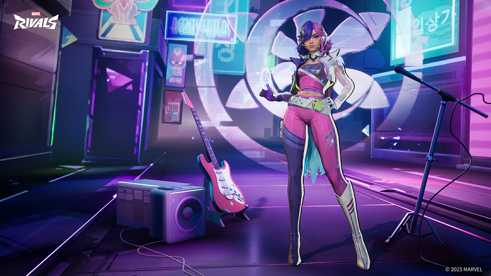
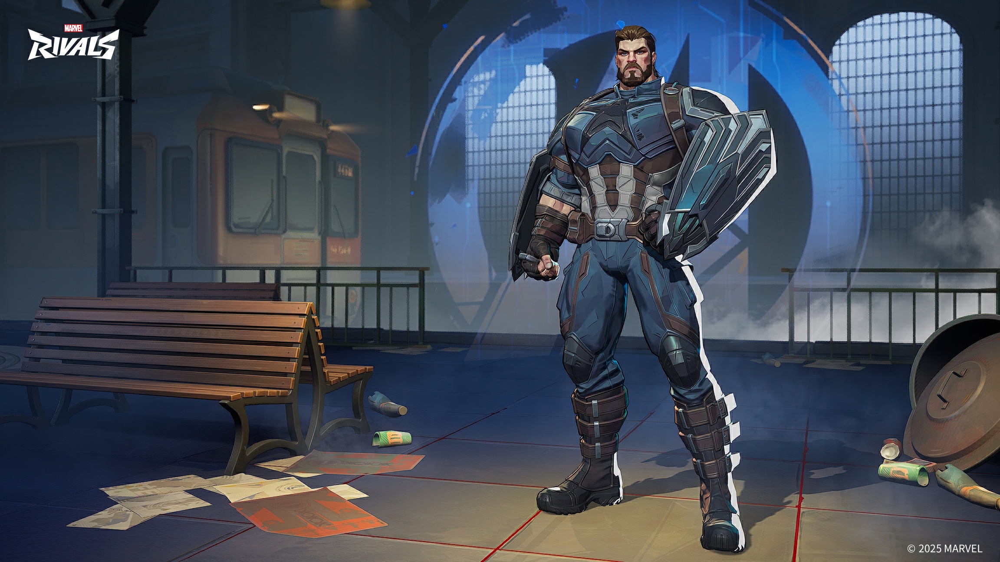

Greetings, Rivals!
We're thrilled to announce that the upcoming patch drops on February 6, 2025, at 09:00:00 (UTC+0)! This update will also be applied without server downtime—so you can dive right back into your epic battles as soon as the update is live!
Here's a look at what's coming in this patch:
All-New Costumes
Luna Snow - Mirae 2099
(Limited-time store release: 2025/02/07 02:00:00 UTC+0)

Captain America - Avengers: Infinity War
(Limited-time store release: 2025/02/07 02:00:00 UTC+0)

Bug Fixes
All Platforms
General
- Adjusted age rating labels.
- Fixed an issue with the Epic Launcher restarting after 5 minutes of inactivity, which caused random anti-cheat notifications.
Maps and Gameplay
- Resolved multiple instances where players could get stuck in unique terrain.
- Fixed an occasional synchronization issue with some doors in Hydra Charteris Base: Frozen Airfield.
Hero Bug Fixes
- Venom's Wild Swing: Fixed an issue where Venom Swing could occasionally fail to end properly. Now, he'll always land with style.
- Venom's Ultimate Devour: Resolved a problem where pressing Devour as soon he lands after unleashing Feast of the Abyss would sometimes deal no damage or knockback. Venom's hunger will now be fully satisfied!
- Mister Fantastic's Bulletproof Rubber: Addressed a bug where his Reflexive Rubber ability could sometimes fail to end correctly. He's back to being as fantastic as ever!
- Storm's Tempestuous Control: Fixed an issue where Storm's Ultimate Ability could lead to unintended positions if she unleashes it just as she passes through Doctor Strange's portal. She'll now control the storm without getting lost!
- Storm's Recovery Rumble: Resolved a bug where Storm's Ultimate Ability could end abnormally if trapped by recovering destructible structures. She's ready to unleash her powers—no more interruptions in the eye of the storm!
- Moon Knight's Handy Prompt: Corrected the issue where the ground visual cue for Moon Knight's Ultimate Ability would prematurely disappear—no more being caught unaware about incoming talons.
- Wolverine's Fastball Bewilderment: Fixed occasional synchronization issues in the Fastball Special Team-Up Ability where on Wolverine's side, he would appear as being held by the Hulk, but others would see Wolverine still in his original place. Now, everyone's in sync to play ball.
- Magneto's Ironic Iron Issue: Resolved an occasional problem where Iron Man's Ultimate Ability would still take effect even after being absorbed by Magneto's Ultimate Ability. Magneto's magnetic prowess now has it fully contained!
- Jeff the Land Shark's Spitting Shenanigans: Fixed an issue where if Jeff the Land Shark spit out others just as his Ultimate Ability was about to end, it would be interrupted and automatically spit them out when the ultimate ended, causing it to look like the animation played twice. He'll now eject everyone in one smooth motion!
- Banner's Revival Wardrobe: Addressed a costume issue that occasionally occurred with Banner after being revived by Rocket Raccoon's beacon. He's looking sharp and ready to hulk out!
- Loki's Reload: Fixed a rare issue where Loki's Mystical Missiles would not refill after reloading during unstable network conditions. He's back to being the trickster with a full arsenal!
- Loki's Transformation Trouble: Resolved a rare occurrence where Loki's Ultimate Ability transformation would end immediately after activation in unstable network conditions. His mischief will now last as intended!